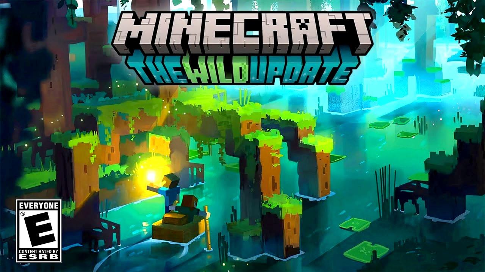
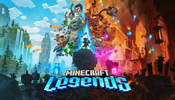
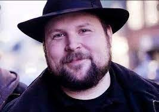

Minecraft is a sandbox video game developed by Mojang Studios. The game was created by Markus "Notch" Persson in the Java programming language. Following several early private testing versions, it was first made public in May 2009 before being fully released in November 2011, with Notch stepping down and Jens "Jeb" Bergensten taking over development. Minecraft has since been ported to several other platforms and is the best-selling video game of all time, with over 238 million copies sold and nearly 140 million monthly active users as of 2021.
In Minecraft, players explore a blocky, procedurally generated 3D world with virtually infinite terrain and may discover and extract raw materials, craft tools and items, and build structures, earthworks, and simple machines. Depending on game mode, players can fight computer-controlled mobs, as well as cooperate with or compete against other players in the same world. Game modes include a survival mode (in which players must acquire resources to build the world and maintain health) and a creative mode (where players have unlimited resources and access to flight). Players can modify the game to create new gameplay mechanics, items, and assets.
Minecraft received critical acclaim, winning several awards and later being cited as one of the greatest video games of all time. Social media, parodies, adaptations, merchandise, and the annual Minecon conventions played prominent roles in popularizing the game. The game has also been used in educational environments to teach chemistry, computer-aided design, and computer science. In 2014, Mojang and the Minecraft intellectual property were purchased by Microsoft for US$2.5 billion. Several spin-offs have also been made, including Minecraft: Story Mode (which has since been shut down on all platforms except Netflix, where only the first five episodes are available), Minecraft Dungeons, Minecraft Earth (which has since also been shut down), and—in 2023—Minecraft Legends. Before coming up with Minecraft, Markus "Notch" Persson was a game developer with King through March 2009, at the time serving mostly browser games, during which he learnt a number of different programming languages.[97] He would prototype his own games during his off-hours at home, often based on inspiration he found from other games, and participated frequently on the TIGSource forums for independent developers.[97] One of these personal projects was called "RubyDung", a base-building game inspired by Dwarf Fortress, but as an isometric three dimensional game like RollerCoaster Tycoon.[98] He had already made a 3D texture mapper for another zombie game prototype he had started to try to emulate the style of Grand Theft Auto: Chinatown Wars.[99] Among the features in "RubyDung" he explored was a first-person view similar to Dungeon Keeper but at the time, felt the graphics were too pixelated and omitted this mode.[99][100] Around March 2009, Persson left King and joined jAlbum, but otherwise kept working on his prototypes.[101][100][102]
Infiniminer, a block-based open-ended mining game first released in April 2009, sparked Persson's inspiration for how to take "RubyDung" forward.[99] Infiniminer heavily influenced the visual style of gameplay, including bringing back the first-person mode, the "blocky" visual style and the block-building fundamentals.[99] However, unlike Infiniminer, Persson wanted Minecraft to have RPG elements.[103]
The original edition of Minecraft, now known as the Java Edition, was first developed in May 2009. Persson released a test video on YouTube of an early version of Minecraft.[99][104] The base program of Minecraft was completed by Persson over a weekend in that month and a private testing was released on TigIRC on 16 May 2009.[105] The game was first released to the public on 17 May 2009 as a developmental release on TIGSource forums.[106] Persson updated the game based on feedback from the forums.[97][107] This version later became known as the Classic version.[108] Further developmental phases dubbed as Survival Test, Indev and Infdev were released in 2009 and 2010.[100]
The first major update, dubbed Alpha, was released on 30 June 2010.[109][110] Although Persson maintained a day job with Jalbum.net at first, he later quit in order to work on Minecraft full-time as sales of the alpha version of the game expanded.[111] Persson continued to update the game with releases distributed to users automatically. These updates included new items, new blocks, new mobs, survival mode, and changes to the game's behavior (e.g. how water flows).[111] To back the development of Minecraft, Persson set up a video game company, Mojang, with the money earned from the game.[112][113][114] Mojang co-founders included Jakob Porser, one of Persson's coworkers from King, and Carl Manneh, jAlbum's CEO.[97]
On 11 December 2010, Persson announced that Minecraft was entering its beta testing phase on 20 December 2010.[115] He further stated that bug fixes and all updates leading up to and including the release would still be free.[116] Over the course of the development, Mojang hired several new employees to work on the project.[117]
Mojang moved the game out of beta and released the full version on 18 November 2011.[118] On 1 December 2011, Jens "Jeb" Bergensten took full creative control over Minecraft, replacing Persson as lead designer.[119] On 28 February 2012, Mojang announced that they had hired the developers of the popular "Bukkit" developer API for Minecraft,[68] to improve Minecraft's support of server modifications.[120] This acquisition also included Mojang apparently taking full ownership of the CraftBukkit server mod which enables the use of Bukkit,[121] although the validity of this claim was questioned due to its status as an open-source project with many contributors, licensed under the GNU General Public License and Lesser General Public License.[122]
On 15 September 2014, Microsoft announced a $2.5 billion deal to buy Mojang, along with the ownership of the Minecraft intellectual property.[123][124][125] The deal was suggested by Persson when he posted a tweet asking a corporation to buy his share of the game after receiving criticism for enforcing terms in the game's end user license agreement (EULA), which had been present in the EULA in the prior three years.[126][127][128] According to Persson, Mojang CEO Carl Manneh received a call from a Microsoft executive shortly after the tweet, asking if Persson was serious about a deal. Mojang was also approached by other companies including Activision Blizzard and Electronic Arts.[128] The deal with Microsoft was arbitrated on 6 November 2014, and led to Persson becoming one of Forbes' "World's Billionaires".[129][130][131][128]
Since the first full release of Minecraft, dubbed the "Adventure Update", the game has been continuously updated with many major updates, available for free to users who have already purchased the game.[132] Early updates frequently introduced gameplay-altering mechanics while more recent updates tend to enhance the game through additional content or tweaks to existing features.[133][better source needed] The most recent major update to the game was "The Wild Update", which released in June 2022 and added new creatures, more biomes, and various items.[134]
The original version of the game was renamed to Minecraft: Java Edition on 18 September 2017 to separate it from Bedrock Edition, which was renamed to just Minecraft by the Better Together Update.[135]
The Bedrock Edition has also been regularly updated, with these updates now matching the themes of Java Edition updates. Other versions of the game such as the various console editions and Pocket Edition were either merged into Bedrock and/or discontinued and as such have not received further updates.[135]
On 16 April 2020, a beta version of Minecraft implementing physically based rendering, ray tracing and DLSS was released by Nvidia on RTX-enabled GPUs.[136] The final version was released on 8 December 2020.[137]
VIDEOS>
GAMEPLAY>
Minecraft is a 3D sandbox game that has no required goals to accomplish, allowing players a large amount of freedom in choosing how to play the game.[18] However, there is an achievement system,[19] known as "advancements" in the Java Edition of the game, and "trophies" on the PlayStation ports.[20] Gameplay is in the first-person perspective by default, but players have the option for third-person perspective.[21] The game world is composed of rough 3D objects—mainly cubes and fluids, and commonly called "blocks"—representing various materials, such as dirt, stone, ores, tree trunks, water, and lava. The core gameplay revolves around picking up and placing these objects. These blocks are arranged in a 3D grid, while players can move freely around the world. Players can "mine" blocks and then place them elsewhere, enabling them to build things.[22] Many commentators have described the game's physics system as unrealistic.[23] The game also contains a material known as redstone, which can be used to make primitive mechanical devices, electrical circuits, and logic gates, allowing for the construction of many complex systems.[24]
The default player skin, Steve, stands on a cliffside overlooking a village in a forest. In the distance, there is a small mountain range. The sun is setting to the right, making the sky turn pink and blue.
An example of Minecraft's procedurally generated terrain, including a village and the default skin Steve
The game world is virtually infinite and procedurally generated as players explore it, using a map seed that is obtained from the system clock at the time of world creation (or manually specified by the player).[25][26][27] There are limits on vertical movement, but Minecraft allows an infinitely large game world to be generated on the horizontal plane. Due to technical problems when extremely distant locations are reached, however, there is a barrier preventing players from traversing to locations beyond 30,000,000 blocks from the center.[i] The game achieves this by splitting the world data into smaller sections called "chunks" that are only created or loaded when players are nearby.[25] The world is divided into biomes ranging from deserts to jungles to snowfields;[28][29] the terrain includes plains, mountains, forests, caves, and various lava/water bodies.[27] The in-game time system follows a day and night cycle, and one full cycle lasts 20 real-time minutes.
When starting a new world, players must choose one of five game modes, as well as one of four difficulties, ranging from peaceful to hard. Increasing the difficulty of the game causes the player to take more damage from mobs, as well as having other difficulty-specific effects. For example, the peaceful difficulty prevents hostile mobs from spawning, and the hard difficulty allows players to starve to death if their hunger bar is depleted.[30] Once selected, the difficulty can be changed, but the game mode is locked and can only be changed with cheats.
Standing on a flat grassy plain against a blue sky, there is a green zombie wearing a blue shirt and purple pants; a large spider with red eyes; a tall, black, slender creature with purple eyes; a green, four-legged creature; and a skeleton.
Some of Minecraft's monsters, displayed from left to right: a zombie, a spider, an enderman, a creeper, and a skeleton
New players have a randomly selected default character skin of either Steve or Alex,[31] but the option to create custom skins was made available in 2010.[32] Players encounter various non-player characters known as mobs, such as animals, villagers, and hostile creatures.[33] Passive mobs, such as cows, pigs, and chickens, can be hunted for food and crafting materials. They spawn in the daytime, while hostile mobs—including large spiders, skeletons, and zombies—spawn during nighttime or in dark places such as caves.[27] Some hostile mobs, such as zombies, skeletons and drowned (underwater versions of zombies), burn under the sun if they have no headgear.[34] Other creatures unique to Minecraft include the creeper (an exploding creature that sneaks up on the player) and the enderman (a creature with the ability to teleport as well as pick up and place blocks).[35] There are also variants of mobs that spawn in different conditions; for example, zombies have husk variants that spawn in deserts.[36]
Minecraft has two alternative dimensions besides the overworld (the main world): the Nether and the End.[35] The Nether is a hell-like dimension accessed via player-built portals; it contains many unique resources and can be used to travel great distances in the overworld, due to every block traveled in the Nether being equivalent to 8 blocks traveled in the overworld.[37] The player can build an optional boss mob called the Wither out of materials found in the Nether.[38] The End is a barren land consisting of many islands floating above a dark, endless void. A boss dragon called the Ender Dragon dwells on the main island.[39] Killing the dragon opens access to an exit portal, which upon entering cues the game's ending credits and a poem written by Irish novelist Julian Gough.[40] Players are then teleported back to their spawn point and may continue the game indefinitely.[41
CUSTOMIZATION >

The modding community consists of fans, users and third-party programmers. Using a variety of application program interfaces that have arisen over time, they have produced a wide variety of downloadable content for Minecraft, such as modifications, texture packs and custom maps. Modifications of the Minecraft code, called mods, add a variety of gameplay changes, ranging from new blocks, new items, new mobs to entire arrays of mechanisms to craft.[77][78] The modding community is responsible for a substantial supply of mods from ones that enhance gameplay, such as minimaps,[79] waypoints, and durability counters,[80] to ones that add to the game elements from other video games and media. While a variety of mod frameworks were independently developed by reverse engineering the code, Mojang has also enhanced vanilla Minecraft with official frameworks for modification, allowing the production of community-created resource packs, which alter certain game elements including textures and sounds.[81] Players can also create their own "maps" (custom world save files) which often contain specific rules, challenges, puzzles and quests, and share them for others to play.[57] Mojang added an adventure mode in August 2012[58] and "command blocks" in October 2012,[60] which were created specially for custom maps in Java Edition. Data packs, introduced in version 1.13 of the Java Edition, allow further customization, including the ability to add new advancements, dimensions, functions, loot tables, predicates, recipes, structures, tags, world generation settings, and biomes.[82][83]
The Xbox 360 Edition supports downloadable content, which is available to purchase via the Xbox Games Store; these content packs usually contain additional character skins.[84] It later received support for texture packs in its twelfth title update while introducing "mash-up packs", which combines texture packs with skin packs and changes to the game's sounds, music and user interface.[85] The first mash-up pack (and by extension, the first texture pack) for the Xbox 360 Edition was released on 4 September 2013, and was themed after the Mass Effect franchise.[86] Unlike Java Edition, however, the Xbox 360 Edition does not support player-made mods or custom maps.[87] A cross-promotional resource pack based on the Super Mario franchise by Nintendo was released for the Wii U Edition worldwide on 17 May 2016.[88] A mash-up pack based on Fallout was announced for release on the Wii U Edition.[89] In April 2018, malware was discovered in several downloadable user-made Minecraft skins for use with the Java Edition of the game.[90][91] Avast stated that nearly 50,000 accounts were infected, and when activated, the malware would attempt to reformat the user's hard drive.[91][90] Mojang promptly patched the issue, and released a statement stating that "the code would not be run or read by the game itself",[90] and would only run when the image containing the skin itself was opened.[92]
In June 2017, Mojang released an update known as the "Discovery Update" to the Bedrock version of the game.[93] The update includes a new map, a new game mode, the "Marketplace", a catalogue of user-generated content that gives Minecraft creators "another way to make a living from the game", and more.[94][95][96]
DEVELOPMENT >

Before coming up with Minecraft, Markus "Notch" Persson was a game developer with King through March 2009, at the time serving mostly browser games, during which he learnt a number of different programming languages.[97] He would prototype his own games during his off-hours at home, often based on inspiration he found from other games, and participated frequently on the TIGSource forums for independent developers.[97] One of these personal projects was called "RubyDung", a base-building game inspired by Dwarf Fortress, but as an isometric three dimensional game like RollerCoaster Tycoon.[98] He had already made a 3D texture mapper for another zombie game prototype he had started to try to emulate the style of Grand Theft Auto: Chinatown Wars.[99] Among the features in "RubyDung" he explored was a first-person view similar to Dungeon Keeper but at the time, felt the graphics were too pixelated and omitted this mode.[99][100] Around March 2009, Persson left King and joined jAlbum, but otherwise kept working on his prototypes.[101][100][102]
Infiniminer, a block-based open-ended mining game first released in April 2009, sparked Persson's inspiration for how to take "RubyDung" forward.[99] Infiniminer heavily influenced the visual style of gameplay, including bringing back the first-person mode, the "blocky" visual style and the block-building fundamentals.[99] However, unlike Infiniminer, Persson wanted Minecraft to have RPG elements.[103]
The original edition of Minecraft, now known as the Java Edition, was first developed in May 2009. Persson released a test video on YouTube of an early version of Minecraft.[99][104] The base program of Minecraft was completed by Persson over a weekend in that month and a private testing was released on TigIRC on 16 May 2009.[105] The game was first released to the public on 17 May 2009 as a developmental release on TIGSource forums.[106] Persson updated the game based on feedback from the forums.[97][107] This version later became known as the Classic version.[108] Further developmental phases dubbed as Survival Test, Indev and Infdev were released in 2009 and 2010.[100]
The first major update, dubbed Alpha, was released on 30 June 2010.[109][110] Although Persson maintained a day job with Jalbum.net at first, he later quit in order to work on Minecraft full-time as sales of the alpha version of the game expanded.[111] Persson continued to update the game with releases distributed to users automatically. These updates included new items, new blocks, new mobs, survival mode, and changes to the game's behavior (e.g. how water flows).[111] To back the development of Minecraft, Persson set up a video game company, Mojang, with the money earned from the game.[112][113][114] Mojang co-founders included Jakob Porser, one of Persson's coworkers from King, and Carl Manneh, jAlbum's CEO.[97]
On 11 December 2010, Persson announced that Minecraft was entering its beta testing phase on 20 December 2010.[115] He further stated that bug fixes and all updates leading up to and including the release would still be free.[116] Over the course of the development, Mojang hired several new employees to work on the project.[117]
Mojang moved the game out of beta and released the full version on 18 November 2011.[118] On 1 December 2011, Jens "Jeb" Bergensten took full creative control over Minecraft, replacing Persson as lead designer.[119] On 28 February 2012, Mojang announced that they had hired the developers of the popular "Bukkit" developer API for Minecraft,[68] to improve Minecraft's support of server modifications.[120] This acquisition also included Mojang apparently taking full ownership of the CraftBukkit server mod which enables the use of Bukkit,[121] although the validity of this claim was questioned due to its status as an open-source project with many contributors, licensed under the GNU General Public License and Lesser General Public License.[122]
On 15 September 2014, Microsoft announced a $2.5 billion deal to buy Mojang, along with the ownership of the Minecraft intellectual property.[123][124][125] The deal was suggested by Persson when he posted a tweet asking a corporation to buy his share of the game after receiving criticism for enforcing terms in the game's end user license agreement (EULA), which had been present in the EULA in the prior three years.[126][127][128] According to Persson, Mojang CEO Carl Manneh received a call from a Microsoft executive shortly after the tweet, asking if Persson was serious about a deal. Mojang was also approached by other companies including Activision Blizzard and Electronic Arts.[128] The deal with Microsoft was arbitrated on 6 November 2014, and led to Persson becoming one of Forbes' "World's Billionaires".[129][130][131][128]
Since the first full release of Minecraft, dubbed the "Adventure Update", the game has been continuously updated with many major updates, available for free to users who have already purchased the game.[132] Early updates frequently introduced gameplay-altering mechanics while more recent updates tend to enhance the game through additional content or tweaks to existing features.[133][better source needed] The most recent major update to the game was "The Wild Update", which released in June 2022 and added new creatures, more biomes, and various items.[134]
The original version of the game was renamed to Minecraft: Java Edition on 18 September 2017 to separate it from Bedrock Edition, which was renamed to just Minecraft by the Better Together Update.[135]
The Bedrock Edition has also been regularly updated, with these updates now matching the themes of Java Edition updates. Other versions of the game such as the various console editions and Pocket Edition were either merged into Bedrock and/or discontinued and as such have not received further updates.[135]
On 16 April 2020, a beta version of Minecraft implementing physically based rendering, ray tracing and DLSS was released by Nvidia on RTX-enabled GPUs.[136] The final version was released on 8 December 2020.[137]
ABOUT NOTCH

Markus Alexej Persson (Swedish: born 1 June 1979),[3] also known as Notch, is a Swedish video game programmer and designer. He is best known for creating the sandbox video game Minecraft and for founding the video game company Mojang in 2009.
Persson's principal venture for founding Mojang was Minecraft which gained popularity and support since its tech demo in 2009.[4] Since then, he has gained significant notability within the video game industry, winning multiple awards and establishing relations with the industry's figureheads.[5] He retained his position as the lead designer of Minecraft until the game's official launch in 2011, after which he transferred creative authority to Jens Bergensten.[6] He had continued to work on Minecraft until he left Mojang in September 2014, after its acquisition by Microsoft for $2.5 billion.[7][8] Microsoft eventually dissociated from Persson following controversial comments regarding topics such as race and gender on his Twitter account.[9] Minecraft
Main article: Minecraft
Persson's most popular creation is the survival sandbox game Minecraft, which was first publicly available on 17 May 2009[26] and fully released on 18 November 2011. Persson left his job as a game developer to work on Minecraft full-time until completion. In early 2011, Mojang AB sold the one millionth copy of the game, several months later their second, and several more their third. Mojang hired several new staff members for the Minecraft team, while Persson passed the lead developer role to Jens Bergensten. He stopped working on Minecraft after a deal with Microsoft to sell Mojang for $2.5 billion. This brought his net worth to US$1.5 billion.[27]
Caller's Bane
Main article: Caller's Bane
Persson and Jakob Porsér came up with the idea for Scrolls including elements from board games and collectible card games. Persson noted that he will not be actively involved in development of the game and that Porsér will be developing it. Persson revealed on his tumblr blog on 5 August 2011 that he was being sued by a Swedish law firm representing Bethesda Softworks over the trademarked name of Scrolls, claiming that it conflicted with their The Elder Scrolls series of games.[28] On 17 August 2011, Persson challenged Bethesda to a Quake 3 tournament to decide the outcome of the naming dispute.[29] On 27 September 2011, Persson confirmed that the lawsuit was going to court.[30] ZeniMax Media, owner of Bethesda Softworks, announced the lawsuit's settlement in March 2012.[31][32] The settlement allowed Mojang to continue using the Scrolls trademark.[33]
Cliffhorse
Cliffhorse is a humorous game programmed in two hours using the Unity game engine and free assets. The game took inspiration from Skyrim's physics engine, "the more embarrassing minimum-effort Greenlight games", Goat Simulator, and Big Rigs: Over the Road Racing.[34][35] The game was released to Microsoft Windows systems as a honorware early access game the start day of E3 2014, instructing users to donate Dogecoin to "buy" the game before downloading it.[36] The game accumulated over 280,000 dogecoins.[37]
0x10c
Main article: 0x10c
Following the end to his involvement with Minecraft, Persson began pre-production of an alternate reality space game set in the distant future in March 2012. On April Fools' Day, Mojang launched a satirical website for Mars Effect (parody of Mass Effect), citing the lawsuit with Bethesda as an inspiration.[38] However, the gameplay elements remained true and on 4 April, Mojang revealed 0x10c (pronounced Ten to the C) as a space sandbox title.[39] Persson officially halted game production in August 2013. However, C418, the composer of the game's soundtrack (as well as that of Minecraft), released an album of the work he had made for the game.[40]
Ludum Dare entries
Persson has also participated in several Ludum Dare 48-hour game making competitions.[41]
Breaking the Tower was a game Persson developed for the entry to the Ludum Dare No. 12 competition. The game takes place on a small island, where the player must gather resources, construct buildings, and train soldiers in order to destroy a large tower on this island. The game received brief gaming media attention.[42][43]
Metagun is a 2D platformer created for Ludum Dare no. 18.[44]
Prelude of the Chambered is a game Persson developed for the entry to the Ludum Dare No. 21 competition. Prelude of the Chambered is a short first-person dungeon crawler video game.
Minicraft is a game developed for Ludum Dare No. 22, held 16–19 December 2011.[45][46] It is a small top-down game with similarities to Zelda and influenced by Minecraft. It is written in Java.